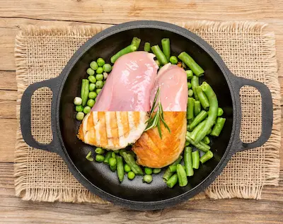

Qué Comer Antes y Después de Entrenar (Según Tu Objetivo)
Los Fundamentos Científicos de la Nutrición Peri-Entrenamiento
La ventana nutricional alrededor del entrenamiento es crucial porque afecta directamente la síntesis de proteínas musculares, la reposición de glucógeno y la recuperación general. Estudios muestran que consumir proteínas antes del ejercicio aumenta la disponibilidad de aminoácidos en sangre durante la sesión, reduciendo el catabolismo muscular. Para entrenamientos de fuerza, se recomienda 0.4-0.5g de proteína/kg de peso corporal 1-2 horas antes, combinado con carbohidratos de bajo índice glucémico (avena, batata) para energía sostenida.
Post-entreno, el cuerpo está en estado anabólico durante hasta 48 horas, pero los primeros 60 minutos son críticos para maximizar la reparación muscular. Investigaciones del Journal of the International Society of Sports Nutrition indican que la combinación ideal post-ejercicio es 0.3-0.4g/kg de proteína de rápida absorción (suero de leche o proteína de guisante para veganos) + 0.8-1.2g/kg de carbohidratos (arroz blanco, fruta) para reponer glucógeno. Esto es especialmente importante en entrenamientos dobles o de alta frecuencia.
Protocolos Específicos para Cada Objetivo
Ganar Masa Muscular:
- Pre-entreno: 30g de proteína + 50g carbohidratos complejos (ej: pollo con quinoa)
- Post-entreno: 40g proteína rápida + 70-100g carbohidratos simples (ej: batido de proteína con plátano y miel)
Estudios muestran que esta combinación aumenta la síntesis proteica en un 35% comparado con solo proteína.
Mejorar Resistencia (Running, Ciclismo):
- Pre-entreno: 25g proteína + 75g carbohidratos bajos en fibra (ej: tortilla con pan blanco)
- Post-entreno: Relación 3:1 carbohidratos:proteína (ej: salmón con arroz y verduras)
La investigación en endurance athletes muestra que esta ratio optimiza la recuperación del glucógeno.
Pérdida de Grasa:
- Pre-entreno: 20g proteína + cafeína (ej: huevos con café)
- Post-entreno: 30g proteína + vegetales fibrosos (ej: filete con espárragos)
Estudios de la Universidad de Birmingham encontraron que este enfoque preserva músculo en déficit calórico.
Adaptaciones para Dietas Veganas
Los atletas veganos deben prestar especial atención a:
- Combinación de proteínas pre-entreno: Arroz integral + lentejas (proporcionan todos los aminoácidos esenciales)
- Suplementación post-entreno: Proteína de guisante o arroz fermentado, que estudios muestran tienen tasas de absorción similares al suero de leche
- Timing de nutrientes: Consumir comidas 2-3 horas antes para asegurar digestión completa
Un estudio de 2023 en Nutrients demostró que atletas veganos que combinaban adecuadamente sus proteínas no mostraban diferencias en ganancia muscular versus omnívoros cuando se equiparaban las dosis totales.
Errores Comunes y Soluciones
- Exceso de fibra pre-entreno: Puede causar molestias gastrointestinales. Solución: Elegir carbohidratos refinados 1 hora antes.
- Demasiada grasa post-entreno: Retrasa la absorción de nutrientes. Solución: Limitar grasas a <10g en la comida post-ejercicio.
- Ignorar la hidratación: La deshidratación del 2% reduce el rendimiento en un 15%. Solución: 500ml de agua 2h antes + 150-200ml cada 15min durante.
Los análisis de sudor pueden personalizar aún más las necesidades, especialmente en atletas de resistencia que pierden más electrolitos.